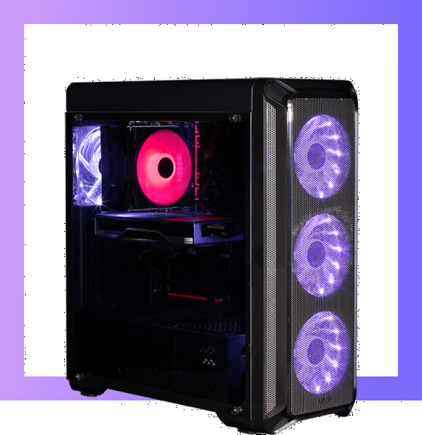

Чем мы занимаемся?
Сервер zvzcraft - полуванильный приватный сервер по майнкрафту.
На сервере ламповое комьюнити, нет лагов и нет границы мира и поэтому вы можете строить свой дом даже за 100000 блоков от спавна.
Для отсеивания неадекватных игроков существует система заявок (заявки в дискорде).
Гриферство запрещено, всё будет возвращено, а грифер забанен.
Плагин дает возможность крафта скалк-сенсора и оптимизирует использование оперативной памяти сервера.
Есть все возможности для реализации своих идей. Мы будем рады умелым и начинающим строителям, любителям рп, торговцам, шахтёрам итд.
Также на сервер возможно зайти с бедрока поэтому вы сможете играть не только дома, но и в поездке на том же сервере.
Подавай заявку и присоединяйся к команде zvzcraft!